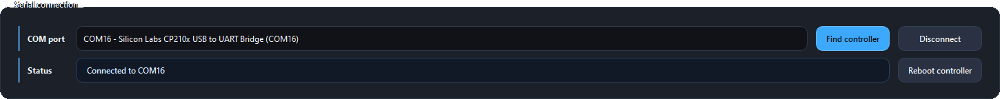
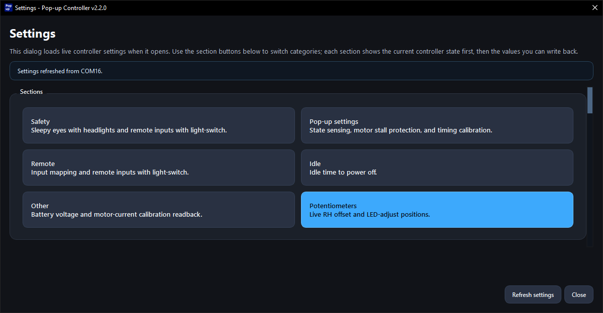
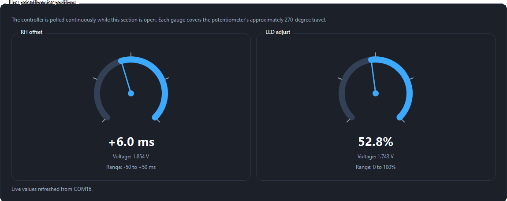
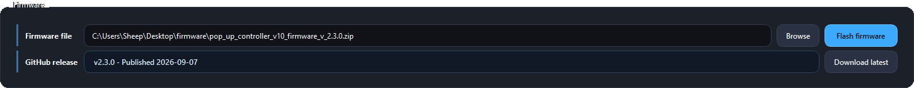

Precondition
Complete the App Setup Guide first.
Complete the App Setup Guide first.

Shows the firmware version currently running on the connected controller.
Shows the build date of the currently running firmware.
Current mode of the controller.
Shows the I2C address of the remote module.
Controller board temperature.
BENCH MODE: Voltage < 7 Volts. Controller runs in limited functionality, pop-up control is disabled.
RUNNING: Controller is running in the standard mode as is expected in the car.

Shows which COM port the controller was found on.
Shows connection status.
Searches the COM ports for the controller.
Connects to or disconnects from the controller.
Reboots the controller. This will save all data to memory before reboot.

The total controller runtime along with boot counter.
Shows total pop-up cycles, runtime, and errors.
Note: This includes cleared error codes.
Shows activity counters for physical buttons and remote inputs.

Determines if Sleepy Eye mode can be activated with light-switch in other positions than OFF.
Determines if remote control works with light-switch in other positions than OFF.

It is not recommended to adjust the following settings without consulting me first.
The minimum amount of time the mechanical switch needs to maintain a position before it becomes valid.
The amount of time a sensing impulse is settling during a pop-up position readout.
Toggle and configuration for pop-up stall protection.
Stored timing data to improve the precision of sleepy eye mode.

Allows mapping controller actions to different buttons on the remote.
Determines if remote control works with light-switch in other positions than OFF.

This time is only incremented while the light-switch is in the OFF position. Any input or pop-up movement resets it.
The amount of idle time needed for the controller to shutdown.

Allows getting live readings of voltage and adjustments of calibration constants.
Calibration values to make the current readout more accurate.


Time offset of RH Pop-up when going into Sleepy Eye mode position.
LED brightness.

Shows stored errors related to the pop-up mechanisms.
Shows stored controller errors that do not belong to the pop-up mechanism section.
Allows clearing the error list.
Refreshes the error list.

Shows serial number, manufacture date, and initial firmware version.
Shows board serial, board revision, and car model.
Contains service actions intended during manufacturing to load manufacturing data and setup calibrations.
This section is not intended for users.


Follow the App Flashing Guide for more detailed instructions.
The selected firmware file to be used for the flashing.
The latest firmware file available on GitHub.
Opens dialog for manually selecting a firmware file.
Flashes the selected firmware file to the controller.
Downloads the latest GitHub firmware release and selects the file.